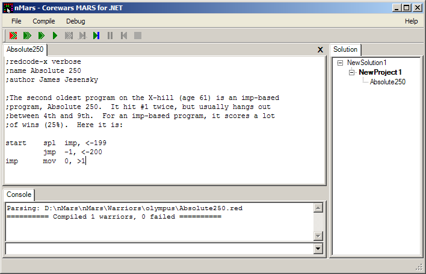
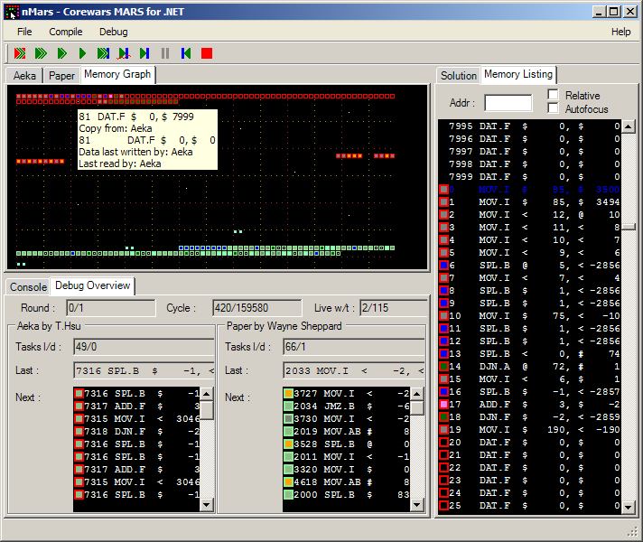

nMars - IDE
Overview
- Executable file is nMars.IDE.exe
- IDE has simple editor of warriors and rules
- IDE integrates parser and it's showing parser errors on it's console
- IDE is able to manage warriors in projects ans solutions
Editor and IDE

- project is set of settings similar to console switches
- it contains warriors
- rules
- praser and engine options
- breakpoints
- solution is set of projects
- it is setup of components which are used to run projects
- it contains projects
- it contains components setting
- IDE default components could be configured thru nMars.IDE.exe.config
Debugger

- has three types of debug watches
- graph planar view of memory
- list linear view of memory
- warriors/tasks warrior stats and task queue
- watches has colour semantics for each memory cell
- outer frame is colour of warrior lt.red, lt.green, lt.blue and lt.yellow
- inner frame is colour of instruction
- MOV grey
- DAT black
- SPL blue
- math violet
- jumps green
- inner white dot for DAT instructions other than 0,0
- there are event flashes for
- read aquamarine
- write orange
- exec seagreen
- died cyan
- there is tooltip with plenty information about cell
- click will focus cell in listing watch
- future: double click will edit cell
- UI and engine are asynchronous, engine could change speed
- Single click on cell will focus it in memory listing
- Double click on cell will open breakpoints editor
- There is console/shell which could execute textual commands
- Shell could be extended by nMarsShellPy module with IronPython